pt cm
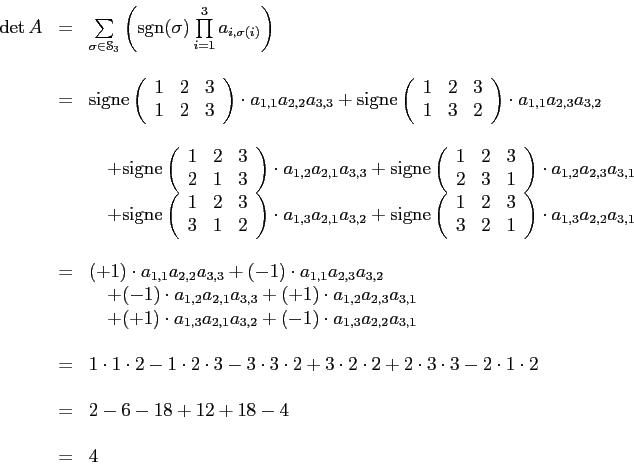
Comme
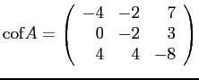
, on en déduit que
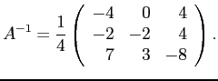
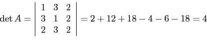
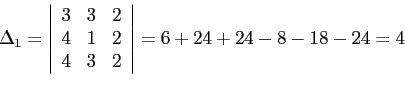
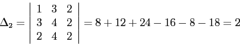
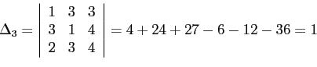
Ainsi,
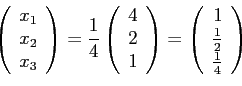
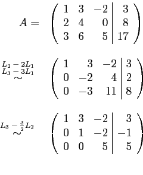
En appliquant une phase ascendante de résolution, on a
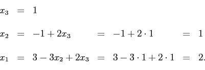
Donc,
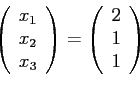
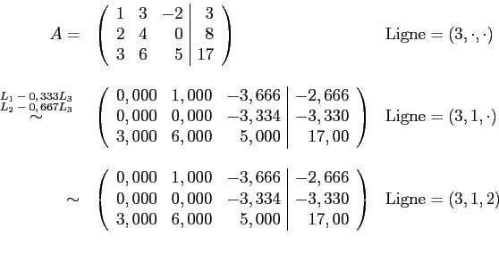
En appliquant une phase ascendante de résolution, en suivant le sens inverse des éléments du vecteur Ligne, on a
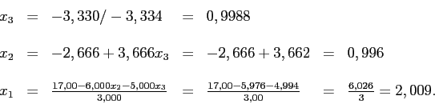
Donc,
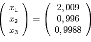
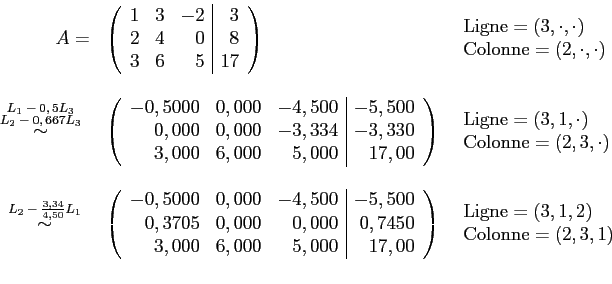
En appliquant une phase ascendante de résolution, en suivant le sens inverse des éléments des vecteurs Ligne et Colonne, on a
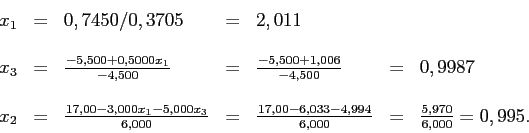
Donc,
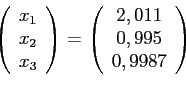
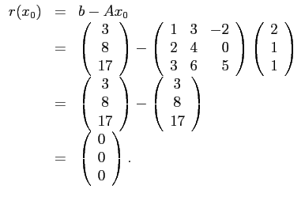
Pour la partie b), on obtient avec une mantisse à 6 chiffres, mais stockée en mantisse à 4 chiffres
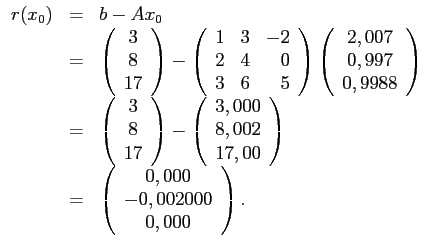
Pour la partie c), on obtient avec une mantisse à 6 chiffres, mais stockée en mantisse à 4 chiffres
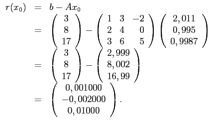
La norme euclidienne du résidu de la partie b) est
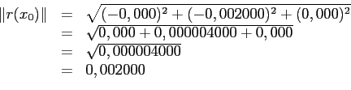
La norme euclidienne du résidu de la partie c) est
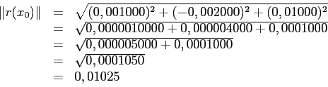
Les méthodes de Gauss avec choix de pivot partiel ou de pivot total n'améliorent donc pas toujours la solution.
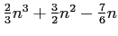
opérations), il faut comparer les éléments un à un pour déterminer lequel est le plus grand. Pour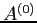
, on compare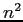
éléments, c'est-à-dire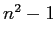
opérations. Pour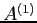
, on compare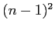
éléments et on a donc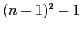
opérations. Pour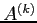
, on compare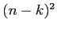
éléments, c'est-à-dire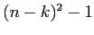
opérations. Puisqu'on doit obtenir jusqu'à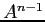
, il faut donc sommer pour les valeurs de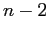
. Cela fait donc
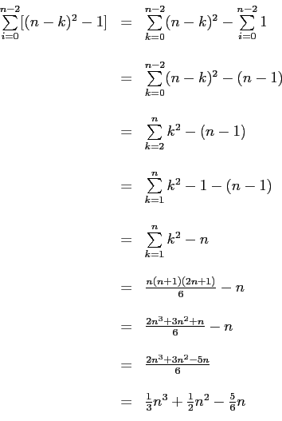
Il faut donc
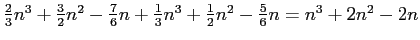
opérations.
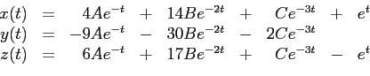
on obtient
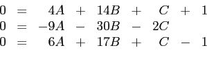
La résolution avec la méthode de Gauss avec choix de pivot total donne
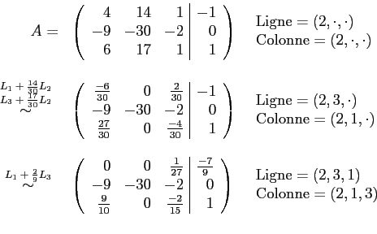
En appliquant une phase ascendante de résolution, en suivant le sens inverse des éléments des vecteurs Ligne et Colonne, on a
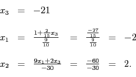
Donc,
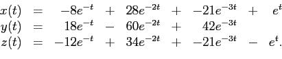
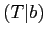 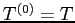 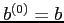 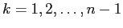 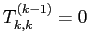 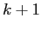 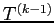 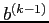 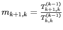
1. On forme la matrice
et on pose
2. Pour
2.1 Si
 et
et On note la matrice résultante
Faire de même pour le vecteur
2.2 Calculer
FIN
On obtient alors un système triangulaire supérieur où et
Pour la phase ascendante de résolution, on obtient et pour .
Comme on doit faire ces opérations pour , il y a en tout opérations pour la triangularisation.
Pour la phase ascendante, il y a une multiplication pour et ensuite, pour , il y a à chaque fois 2 multiplications et une addition. En tout, pour la phase ascendante, cela fait opérations.
En tout et pour tout, on obtient opérations.
En appliquant une phase ascendante de résolution, on a
Donc,